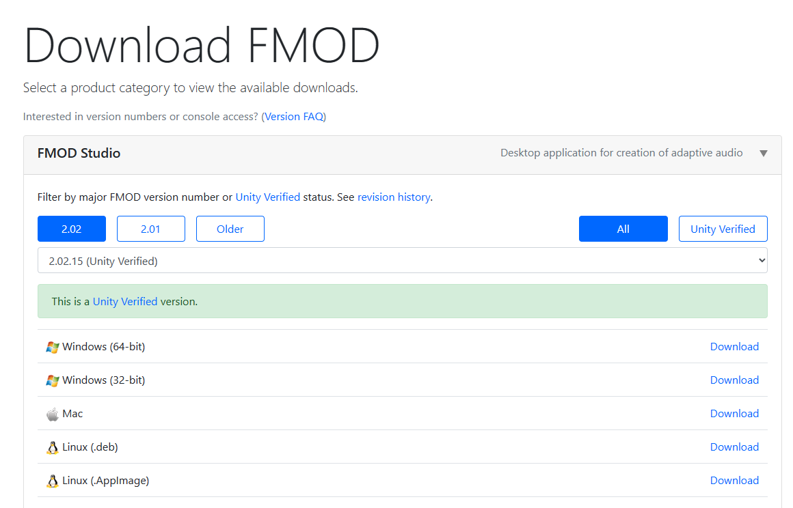

While the FMOD dll for Cave Story implements the FMOD engine into Cave Story,
you're still going to need a way to create FMOD bank files for the dll.
That's where FMOD Studio comes in!
Firstly, you're going to need to go to
fmod.com
in order to get FMOD Studio.
You will need to create an account, as seen below.
After you create an account, Download version 2.02 of FMOD Studio, as that is the version used in the current release of the FMOD dll.
Once you're done installing it, open FMOD Studio!
You're ready for the next part now.
Opening the Cave Story FMOD Project